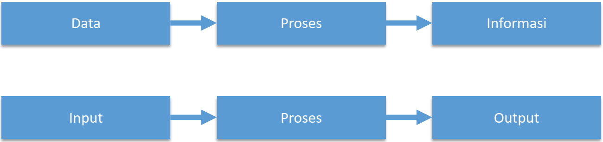
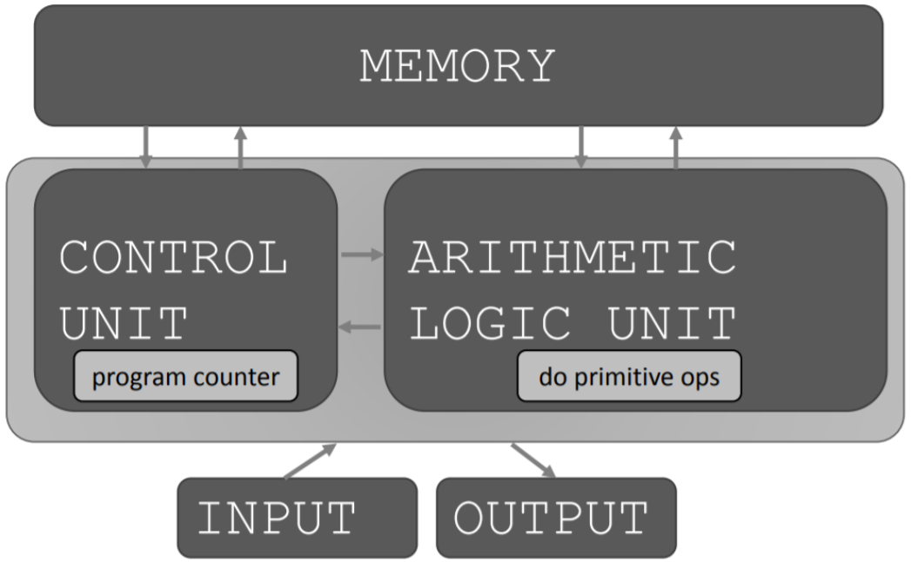

▸ Di pertemuan pertama membahas tentang Teknologi yaitu Ilmu yang berkaitan dengan pengetahuan sains / seni dengan mengaplikasikan pengetahuan saintifik ke praktis. Dan juga membahas tentang Teknologi Informasi Data yang terdiri dari fakta mentah bisa itu berbentuk tulisan, gambar, suara, sinyal yang akan di proses menjadi suatu Informasi. Kemudian, Informasi merupakan data atau kumpulan data yang sudah di olah atau di manipulasi, digunakan untuk menentukan suatu keputusan. Berikut Struktur Sistem secara umum
Komputer fungsinya sebagai alat bantu menyelesaikan persoalan, alat elektronik yang dapat melakukan perhitungan. Apa yang dilakukan komputer? Secara mendasar yaitu melakukan perhitungan 1 miliar kalkulasi per detik juga mengingat hasil penyimpanan sampai 100GB. Perhitungan macam apa? dibentuk dengan suatu Bahasa yang dilakukan oleh orang yang disebut sebagai Programmer. Berikut Arsitektur Dasar Mesin
